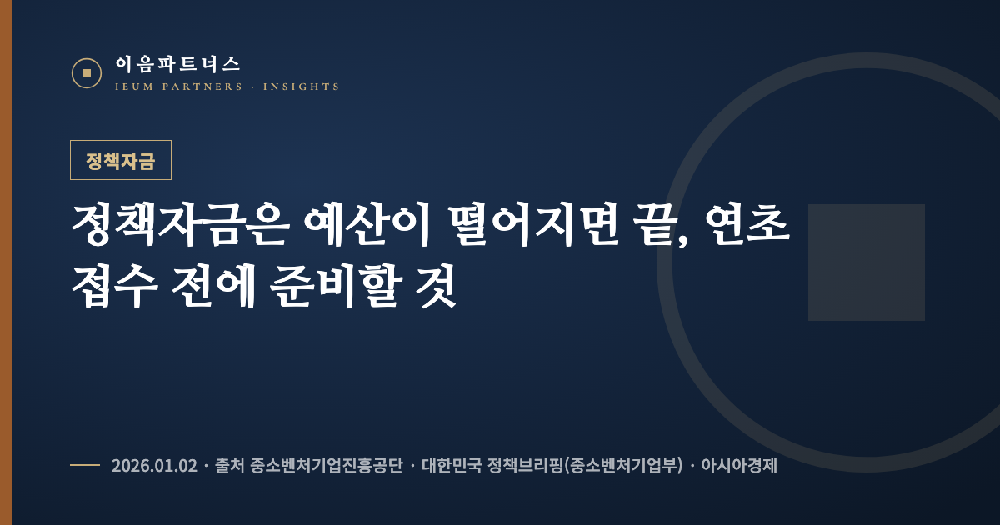

정책자금은 예산이 떨어지면 끝, 연초 접수 전에 준비할 것

정책자금은 필요할 때 언제든 신청하면 된다고 생각하기 쉽지만, 실제로는 해마다 정해진 예산 안에서 운영됩니다. 중진공 누리집의 구조개선전용자금 안내에는 신청 기간이 “예산소진 시까지, 중소벤처기업진흥공단 관할 지역본지부를 통해 신청”으로 적혀 있습니다(중소벤처기업진흥공단). 이 글에서는 정책자금 접수가 어떻게 돌아가는지, 연초 접수 전에 무엇을 준비하면 좋은지 정리합니다.
2026년 운용계획은 2025년 12월 22일에 발표됐고 접수는 바로 1월 초에 시작됐습니다. 연말은 다음 해 계획을 기다리며 서류를 챙겨 두기 좋은 때이니, 어떤 자금을 언제 신청할지 막막하다면 카카오톡 채널 이음파트너스에서 함께 일정을 짜 볼 수 있습니다.
2026년 접수는 어떻게 진행됐나
중소벤처기업부는 2026년 중소기업 정책자금을 1월 5일부터 중진공 누리집에서 신청받고, 서울·지방 소재 기업과 경기·인천 소재 기업의 신청일을 나눠 접수했습니다(대한민국 정책브리핑).
| 구분 | 내용 |
|---|---|
| 2026년 규모 | 4조 4,313억 원(융자 4조 643억 원, 이차보전 3,670억 원) |
| 일반 신청 시작 | 2026년 1월 5일, 중진공 누리집 |
| 지역별 신청일 | 서울·지방 1월 5~6일, 경기·인천 1월 7~8일 |
| 구조개선전용자금 | 2026년 1월 2일부터 예산 소진 시까지, 관할 지역본·지부 |
| 문의 | 정책자금 전담 콜센터 1811-3655 |
자금마다 신청 방식이 조금씩 다릅니다. 예를 들어 위기 징후 기업의 재기를 돕는 구조개선전용자금은 관할 지역본·지부를 통해 신청하고, 3년간 10억 원 이내의 운전자금을 5년 이내(거치 2년 이내)로 빌려줍니다.
왜 일찍 준비해야 할까
예산 소진 시까지 받는 자금은 예산이 남아 있을 때 신청해야 평가 기회라도 얻을 수 있습니다. 실제로 중진공은 매출채권팩토링 신청이 상반기에 몰려 하반기 지원이 원활하지 않던 문제를 줄이려고 2026년부터 월별 균등 접수를 도입했습니다(아시아경제). 그만큼 연초 수요가 크다는 뜻으로 볼 수 있습니다.
절차는 상담·신청과 요건 확인, 서류 검토와 현장 실사, 평가와 승인, 지원 결정 통보, 융자 실행 순서로 진행됩니다. 신청은 회사가 직접 하고, 지원 여부와 금액은 각 기관 심사로 정해집니다. 일찍 신청한다고 승인되는 것은 아니지만, 서류가 늦게 갖춰지면 그만큼 기회를 놓칠 수 있습니다.
대표님이 지금 확인할 것
- 2027년에 필요한 자금이 운전자금인지 시설자금인지, 시기와 금액을 대략 정해 두었는지
- 최근 재무제표와 사업계획을 연초에 바로 낼 수 있도록 세무 담당과 일정을 맞췄는지
- 중진공 누리집의 정책자금 내비게이션으로 우리 회사에 맞는 자금을 미리 찾아보았는지
- 2027년 운용계획 발표와 지역별 신청일을 확인할 담당자를 정했는지
참고한 자료
- 구조개선전용자금 안내(정책자금 융자 세부사업) — 중소벤처기업진흥공단 (2026)
- 내년 중소기업 정책자금 4조 4000억 원 공급…60% 이상 비수도권에 — 대한민국 정책브리핑(중소벤처기업부) (2025.12.22)
- 중진공, 올해 밸류체인안정화 자금 총 1985억원 공급 — 아시아경제 (2026.01.20)
내년 정책자금 신청 일정을 미리 세워 두고 싶다면 카카오톡 채널 이음파트너스로 편하게 물어봐 주세요.
※ 이 글은 일반적인 정보 제공을 위한 것으로, 개별 사안은 세무사·노무사 등 전문가와 함께 확인하시기 바랍니다.